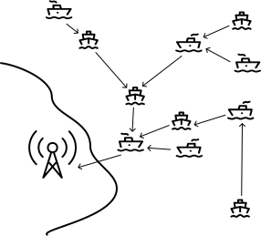
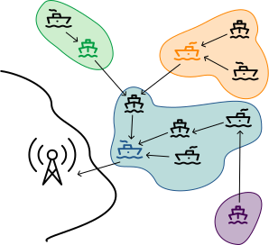
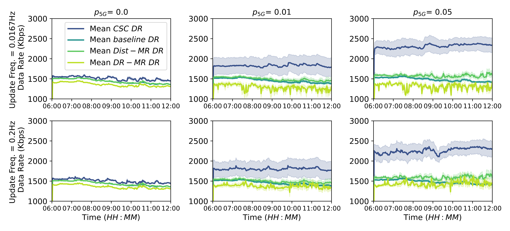
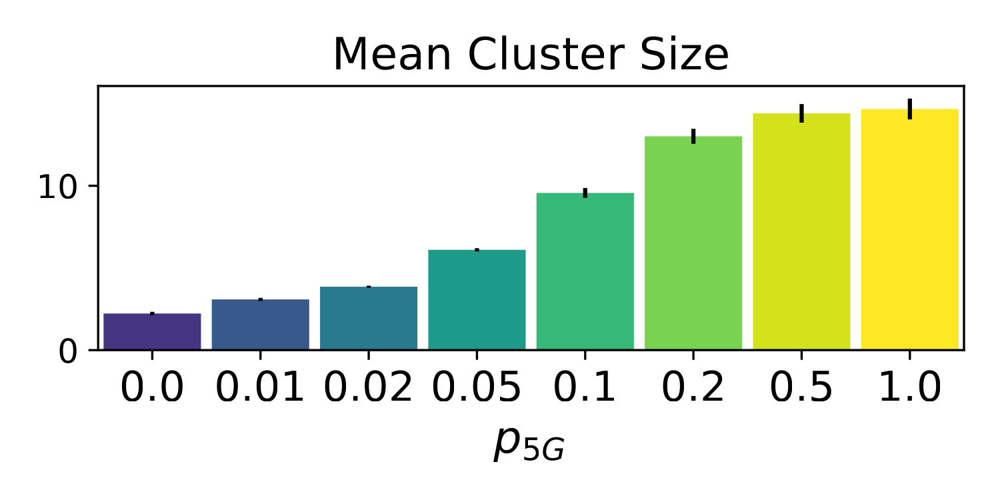
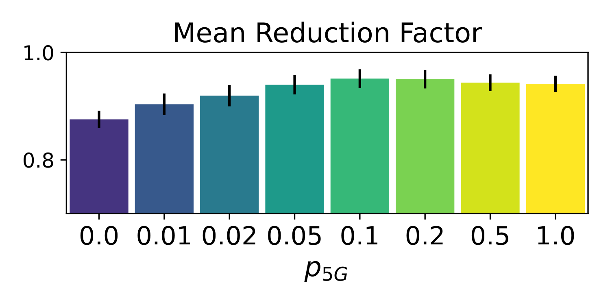
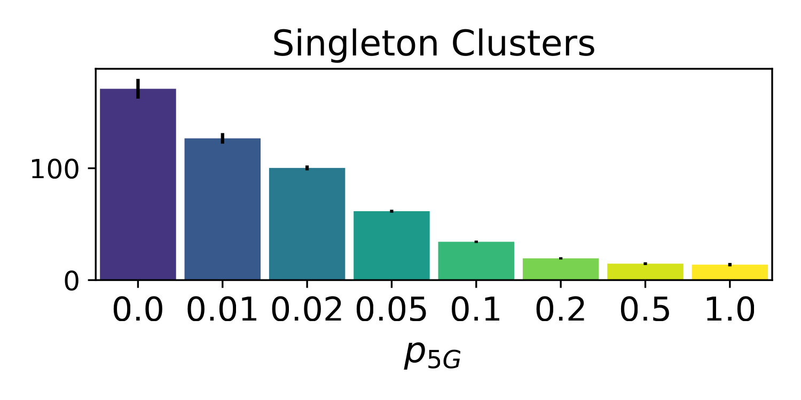
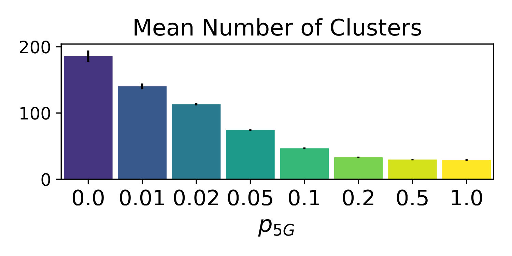
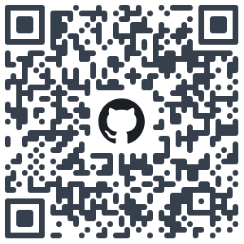

Robust Communication
through Collective Adaptive Relay Schemes
for Maritime Vessels
Martina Baiardi1, Ghassan Al-Falouji2, Danilo Pianini1 and Sven Tomforde2
1 University of Bologna, Italy
2 University of Kiel, Germany
Context: Autonomous Maritime Operations
-
MASS (Maritime Autonomous Surface Ships): (semi)autonomous vessels which heavily rely on sensors for operating in the environment.
-
Support the transition towards MASS by achieving situational awareness.

Generated by OpenAI Sora
Autonomy & throughput needs
Situational awareness for autonomous vessels requires:
- The availability of high-throughput sensors, and
- A communication infrastructure to support the transmission of sensors data.
Moreover, ship-to-shore communication is a regulatory requirement for maritime operations, essential for safety supervision, operational control, and remote management—especially important for autonomous vessels.
 Generated by OpenAI Sora
Generated by OpenAI Sora
Challenges
- Dynamic sparse vessels distribution
- Environmental conditions
- The variety of communication means onboard
- Traditional maritime communication systems limited bandwidth
- Satellite communication, requires either expensive antennas not equipped on the vessel or suffers with high latency.
- Cellular coverage (e.g. 4G and 5G) is limited to coastal areas, and cannot reach open sea directly.
Approach
In this work, we address the communication challenge: we propose novel decentralized network techniques to improve sensors’ data transport and collection in the maritime environment.
To do so, we propose four network approaches:
- Non-collaborative direct communication towards shore station
- MST Distance-based multi-relay communication
- MST Data rate-based multi-relay communication
- Collective Summarization Clusters
 
1. Non-Collaborative Direct Communication
Inspired to current network topology, vessels communicate directly towards shore station whenever they have some bandwidth available.
The limitations of this approach are intuitive:
- Limited coverage of vessels
- Shore stations as a bottle-neck
- Information redundancy
2. Distance-based Multi-Relay Communication
-
All vessels that cannot communicate with shore station with sufficient bandwidth relay its data stream to a vessel along the geographical shortest path towards the land station.
-
Direct communication with the relay may be insufficient, while using vessels not on the shortest path may be more effective.
3. Data Rate-based Multi-Relay Communication
This network improves the Distance-based Multi-Relay Communication by selecting the relay which maximises the data rate instead of minimising the distance.
Collective Summarisation Clusters (CSC)
-
IDEA: high-fidelity data can be collected locally, then summarised at strategic points within the network and finally forwarded toward the land station.
-
Vessels self-organise into clusters where data can be collected in a designated summariser. The leader then forwards the summarised output to the land station or to a relay in the next cluster.
Aggregate Programming
-
AP is a functional macroprogramming paradigm centered around the notion of a computational field: a distributed data structure that maps points in space and time to values.
-
In particular, the priority-based leader election, network partitioning, and data summarisation is an instance of the Self-Organising Coordination Region Aggregate Pattern.
We adopted Collektive¹ as framework for Aggregate Programming.
val drAround = neighboring(drDistance)
val potRelays: Field<Boolean> = neighboring(leader)
.alignedMap(drAround) { l, d ->
// Other cluster and closer to the station
l != leader && d < drDistance
}
val dists = metric + drAround
val myRelay = potRelays.alignedMap(dists) { r, d ->
if (r) d else Double.POSITIVE_INFINITY
}
val imRelay = neighboring(myRelay).any { it == localId }
val upstreamDR = 1 / metric[myRelay]
Simulation Setup
-
All vessels are equipped with: GPS, ARPS (VHF), Wi-Fi, and 5G consumer module
-
$p_{5G}$ percentage of vessels with 5G repeater
-
Real navigation data (from Kiel Fjord)
- 6 hours time window from August 18, 2022
-
Open data used to locate 5G towers and the AIS shore stations along the Kiel coast.
-
We used Alchemist² to perform the simulation, which is an open-source event-driven simulator supported by the Aggregate Programming framework.

Evaluation
As evaluation metric we measure the data rate that each vessel transmit for each network configuration.
CSC Evaluation
   Limitations & Future Work
- The navigation data used in the simulation is limited to a six-hour time window of a single day, which may not be representative of the entire maritime traffic in the area (or worldwide). Further experimentation will be performed in future work.
- In this work we did not focus on finding summarisation algorithms. Promising research directions include fusion methods deserving a future dedicated investigation (Ghassan Al-Falouji@SISSY presented this roadmap).
- Adverse and mutating weather conditions have not been taken into account in this work, it is interesting to evaluate the impact of these conditions to the communication quality and the resulting algorithms behaviour.
Conclusion
Source code for executing and reproducing experiments is freely available on GitHub under a permissive license.

Badge awarded from the artifact evaluation committee.